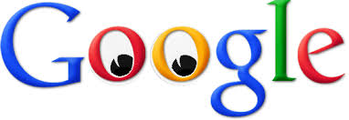

It has come to my attention that much of my published works displayed through the web have been lost to the greedy hands of others who stole and plagiarized my work. Through years of toil and strife, I have made website after website, service after service, and one by one my works have been noticed and stolen by others - in particular large corporations. Although my research has not uncovered any major evidence supporting this theory, I cannot help but feel like the government has been tracking me and releasing my private works to others to steal and claim as their own.
I am here to take a stance and reclaim the work that is mine.
When my first child was born, I wanted to make a way for him to find whatever information he might need during his lifetime. I created a website that would be able to search through all of the knowledge of the world so that my son could discover whatever information he wanted. While still an infant, my son was fascinated by googly eyes, and that inspired the name and logo for the website I created for him.
After showing my website to a buddy of mine, he wanted to use it to assist his growing business. Although I was hesitant, I obliged, and quickly lost the rights to my website, and now my son hates me.
The light at the end of the tunnel came first as inspiration to me when I was going through a rough patch of my life. After my wife and kids left me, I turned to food for my comfort. I was never much of a cook, so most of what I made for myself was just thrown together. After several months of doing this, I became lazier and lazier with my cooking. Eventually I turned to taking a piece of bread and throwing whatever else I had onto it. One day, my landlord came to my door asking for rent and noticed my cooking / eating habits and thought it was actually a neat idea. I thought about it more and how I could make bread with random crap on it more appealing to consumers. I thought about what Americans like the most: cheese and oil. Then it hit me. I eventually created what is now known as pizza. However, I have never received a cent for any of the sales generated from the production and consumption of pizza.